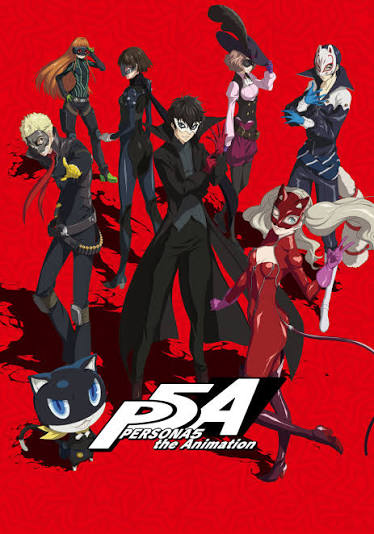

Here are some other media related to Persona 5:

An anime adaptation of Persona 5 that follows Joker and the Phantom Thieves as they awaken their Personas and begin changing the hearts of corrupt adults. The series adapts the main story of the game while expanding on the characters and their relationships.